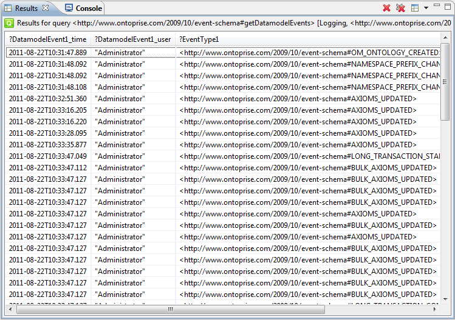

|

|
|
Step by step guide |
|
|
|
|
Step by step guide |
This chapter helps you to set up the logging functionality of OntoBroker. Follow the steps described below.
Note: For OntoBroker startup use a clean config directory (this means a new folder containing a ontoconfig file without any subdirectories)
1. Browse to the OntoBroker installation directory [ONTOBROKER -> conf -> auditing] and copy the contents of the "log4j.properties.obl.mixin" file.
2. Browse to [ONTOBROKER -> conf] and paste the contents of the "log4j.properties.obl.mixin" file into the "log4j.properties".
3. Comment the following lines:
# Enable event logging.
log4j.category.[EVENT]=DEBUG, auditing
log4j.additivity.[EVENT]=false
# To log user actions uncomment the following lines.
log4j.category.[USER_ACTION]=DEBUG, auditing
log4j.additivity.[USER_ACTION]=false
# Set up renderers.
log4j.renderer.org.semanticweb.kaon2.api.event.DatamodelEvent=com.ontoprise.util.logging.ObjectLogicDatamodelEventRenderer
log4j.renderer.com.ontoprise.util.logging.useraction.UserAction=com.ontoprise.util.logging.ObjectLogicUserActionRenderer
# Log to the file log/auditing.obl
log4j.appender.auditing=org.apache.log4j.RollingFileAppender
log4j.appender.auditing.MaxFileSize=5MB
log4j.appender.auditing.MaxBackupIndex=20
log4j.appender.auditing.layout=org.apache.log4j.PatternLayout
log4j.appender.auditing.layout.ConversionPattern=%m%n
log4j.appender.auditing.File=log/auditing.obl
4. Start the OntoBroker Admin Console in start-up mode "Collaboration Server" (the same user as the OS Collaboration user. The default is "Administrator").
5. Start OntoStudio and chose "Collaboration Server" as the storage type, set up a new project.
6. Execute the ping command in the OntoBroker Admin Console.
7. Create a new ontology (e.g. http://www.example.com/auditing) in your already existing project in OntoStudio (see step 5.).
8. Create a class "Person", set a property (name, range = string), and create an instance (e.g. value = Robert).
9. Delete the class "Person"
10. Create another new ontology (e.g. http://www.example.com/importedOntology)
11. Import the ontology from step 10. to the ontology created in step 7.
12. Create a class with a typo (e.g. Cra in place of Car) in http://www.example.com/importedOntology.
13. Rename the class "Cra" to "Car"
14. Delete the imported ontology in the http://www.example.com/auditing ontology.
15. Completely remove the http://www.example.com/importedOntology ontology (also from the repository).
16. Remove the whole project from OntoStudio (do not remove the ontologies from the repository in this case!).
17. Shut down OntoBroker
18. Create a new file-based project (e.g. auditing).
19. Import the log/auditing.obl ontology from the configuration directory to the project created in step 18.
20. Import the "event-schema.obl" and "user-actions-schema.obl" ontologies from [ONTOBROKER -> conf -> auditing]
21. Import the "defaultModule" into the " event-schema.obl" ontology
22. Run the query "getDatamodelEvents"
23. Your result should look like the example in the screenshot below:

Note: All of the logged actions can be found as instances in the "dafaultModule" ontology!
Note: All logged actions can be found as instances in the "dafaultModule" ontology!